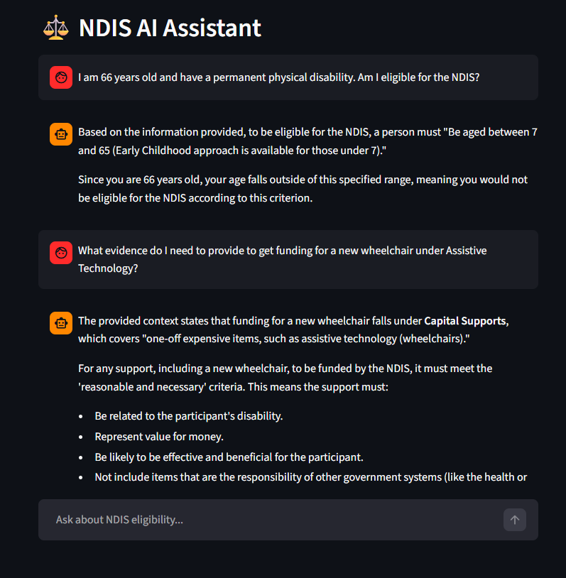
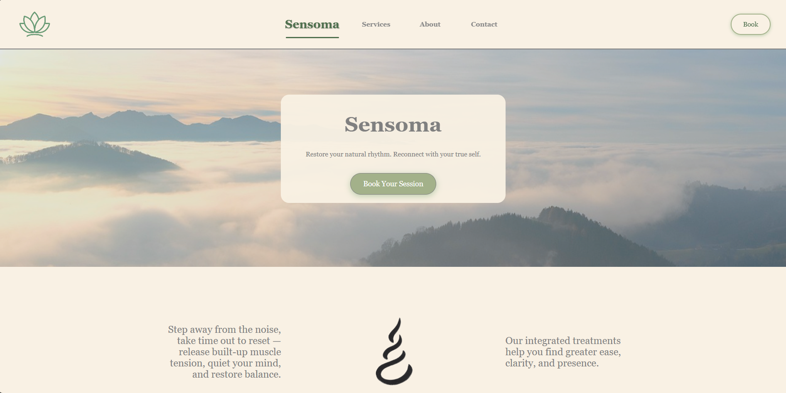
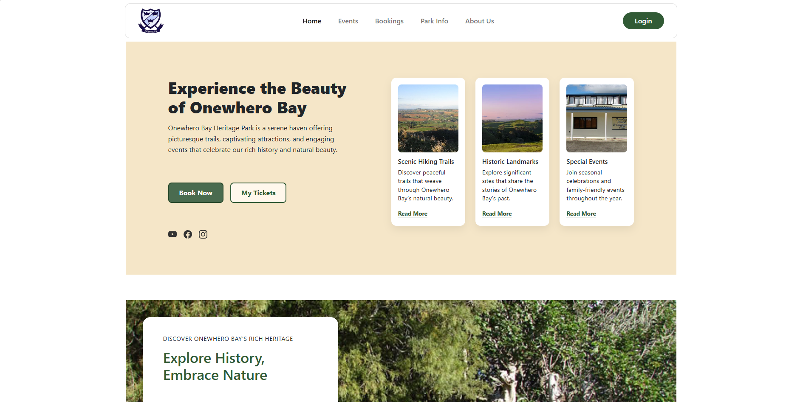
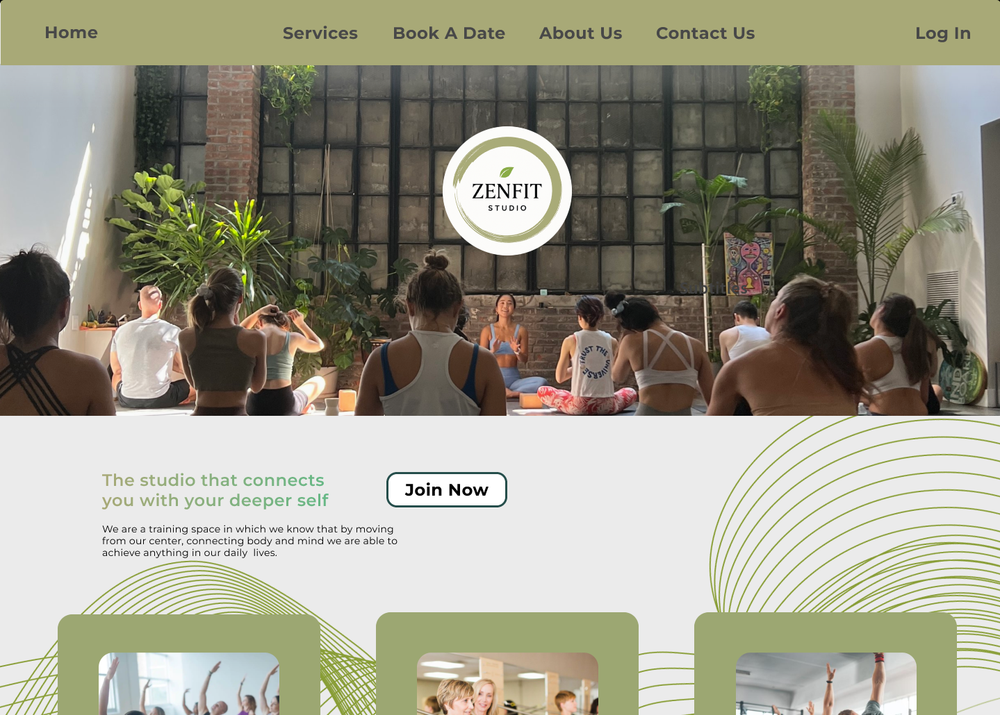

I design and develop software, AI, and digital tools that solve genuine human needs.
Technical projects solving real healthcare coordination problems.
I built an intelligent tool that reads through massive amounts of National Disability Insurance Scheme (NDIS) policy documents to give people instant and reliable answers. Instead of guessing, the system searches official files to find the exact information a user needs. By finding the right information in less than a second, it removes the administrative burden for coordinators and participants so they can focus on care instead of paperwork.
A Retrieval-Augmented Generation (RAG) agent built with LangChain and Gemini 2.5. It uses Facebook AI Similarity Search (FAISS) to find facts within official documents.

Built for a holistic massage and healing practice, this site prioritises trust and calm over complexity. Clear navigation and accessible design help first-time clients feel confident finding information and booking an appointment.

I worked in a small team to build a visitor management system for a heritage park. I led the backend development using C# and PostgreSQL, ensuring the database and server logic connected perfectly to provide a smooth experience for every visitor.

Mobile and desktop app design applying psychology principles to support habit formation and reduce cognitive overload.
At NZCL, I built support plans that met people where they were. This design uses the same approach: scaffolded goals, clear feedback, and progressive complexity.

Combining healthcare operations with modern technical implementation.
My approach is shaped by a degree in Psychology and professional experience in healthcare. These have provided me with the expert insight to deeply understand user needs and translate them into effective technical solutions.
I am a versatile developer who enjoys working across the full range of software development, from professional website design to the logic that powers a platform. I use a structured approach to build tools that are reliable, easy to navigate, and genuinely useful to the people who depend on them. By focusing on clear updates and intuitive design, I build technology that simplifies complex tasks and serves as a genuine support to the people using it.
Open to opportunities, collaborations, and conversations about how chnology can better support people. Feel free to get in touch.